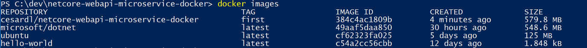
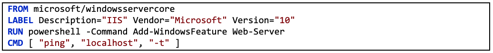

Development Process for Docker-Based Applications
Develop containerized .NET applications the way you like, either IDE focused with Visual Studio and Visual Studio tools for Docker or CLI/Editor focused with Docker CLI and Visual Studio Code.
Whether you prefer a full and powerful IDE or a lightweight and agile editor, Microsoft has tools that you can use for developing Docker applications.
Visual Studio (for Windows). When developing Docker-based applications with Visual Studio, it’s recommended to use Visual Studio 2017 version 15.7 or later, that comes with tools for Docker already built-in. The tools for Docker let you develop, run, and validate your applications directly in the target Docker environment. You can press F5 to run and debug your application (single container or multiple containers) directly into a Docker host, or press CTRL+F5 to edit and refresh your application without having to rebuild the container. This is the most powerful development choice for Docker-based apps.
Visual Studio for Mac. It’s an IDE, evolution of Xamarin Studio, running in macOS and supports Docker since mid-2017. This should be the preferred choice for developers working in Mac machines who also want to use a powerful IDE.
Visual Studio Code and Docker CLI. If you prefer a lightweight and cross-platform editor that supports any development language, you can use Microsoft Visual Studio Code (VS Code) and the Docker CLI. This is a cross-platform development approach for Mac, Linux, and Windows. Additionally, Visual Studio Code supports extensions for Docker such as IntelliSense for Dockerfiles and shortcut tasks to run Docker commands from the editor.
By installing Docker Community Edition (CE) tools, you can use a single Docker CLI to build apps for both Windows and Linux.
As mentioned in earlier sections of this guide, you can use .NET Framework, .NET Core, or the open-source Mono project when developing Docker containerized .NET applications. You can develop in C#, F#, or Visual Basic when targeting Linux or Windows Containers, depending on which .NET framework is in use. For more details about.NET languages, see the blog post The .NET Language Strategy.
The application development life cycle starts at your computer, as a developer, where you code the application using your preferred language and test it locally. With this workflow, no matter which language, framework, and platform you choose, you’re always developing and testing Docker containers, but doing so locally.
Each container (an instance of a Docker image) includes the following components:
This section describes the inner-loop development workflow for Docker container-based applications. The inner-loop workflow means it’s not considering the broader DevOps workflow, that can include up to production deployment, and just focuses on the development work done on the developer’s computer. The initial steps to set up the environment aren’t included, since those steps are done only once.
An application is composed of your own services plus additional libraries (dependencies). The following are the basic steps you usually take when building a Docker application, as illustrated in Figure 5-1.
Figure 5-1. Step-by-step workflow for developing Docker containerized apps
In this section, this whole process is detailed and every major step is explained by focusing on a Visual Studio environment.
When you’re using an editor/CLI development approach (for example, Visual Studio Code plus Docker CLI on macOS or Windows), you need to know every step, generally in more detail than if you’re using Visual Studio. For more information about working in a CLI environment, see the e-book Containerized Docker Application lifecycle with Microsoft Platforms and Tools.
When you’re using Visual Studio 2017, many of those steps are handled for you, which dramatically improves your productivity. This is especially true when you’re using Visual Studio 2017 and targeting multi-container applications. For instance, with just one mouse click, Visual Studio adds the Dockerfile and docker-compose.yml file to your projects with the configuration for your application. When you run the application in Visual Studio, it builds the Docker image and runs the multi-container application directly in Docker; it even allows you to debug several containers at once. These features will boost your development speed.
However, just because Visual Studio makes those steps automatic doesn’t mean that you don’t need to know what’s going on underneath with Docker. Therefore, the following guidance details every step.
Developing a Docker application is similar to the way you develop an application without Docker. The difference is that while developing for Docker, you’re deploying and testing your application or services running within Docker containers in your local environment (either a Linux VM setup by Docker or directly Windows if using Windows Containers).
To begin, make sure you have Docker Community Edition (CE) for Windows installed, as explained in the following instructions:
Get started with Docker CE for Windows
In addition, you need Visual Studio 2017 version 15.7 or later, with the .NET Core cross-platform development workload installed, as shown in Figure 5-2.
Figure 5-2. Selecting the .NET Core cross-platform development workload during Visual Studio 2017 setup
You can start coding your application in plain .NET (usually in .NET Core if you’re planning to use containers) even before enabling Docker in your application and deploying and testing in Docker. However, it is recommended that you start working on Docker as soon as possible, because that will be the real environment and any issues can be discovered as soon as possible. This is encouraged because Visual Studio makes it so easy to work with Docker that it almost feels transparent—the best example when debugging multi-container applications from Visual Studio.
You need a Dockerfile for each custom image you want to build; you also need a Dockerfile for each container to be deployed, whether you deploy automatically from Visual Studio or manually using the Docker CLI (docker run and docker-compose commands). If your application contains a single custom service, you need a single Dockerfile. If your application contains multiple services (as in a microservices architecture), you need one Dockerfile for each service.
The Dockerfile is placed in the root folder of your application or service. It contains the commands that tell Docker how to set up and run your application or service in a container. You can manually create a Dockerfile in code and add it to your project along with your .NET dependencies.
With Visual Studio and its tools for Docker, this task requires only a few mouse clicks. When you create a new project in Visual Studio 2017, there’s an option named Enable Container (Docker) Support, as shown in Figure 5-3.
Figure 5-3. Enabling Docker Support when creating a new ASP.NET Core project in Visual Studio 2017
You can also enable Docker support on an existing ASP.NET Core web app project by right-clicking the project in Solution Explorer and selecting Add > Docker Support, as shown in Figure 5-4.
Figure 5-4. Enabling Docker support in an existing Visual Studio 2017 project
This action adds a Dockerfile to the project with the required configuration, and is only available on ASP.NET Core projects.
In a similar fashion, Visual Studio can also add a docker-compose.yml file for the whole solution with the option Add > Container Orchestrator Support. In step 4, we’ll explore this option in greater detail.
You usually build a custom image for your container on top of a base image you get from an official repository like the Docker Hub registry. That is precisely what happens under the covers when you enable Docker support in Visual Studio. Your Dockerfile will use an existing aspnetcore image.
Earlier we explained which Docker images and repos you can use, depending on the framework and OS you have chosen. For instance, if you want to use ASP.NET Core (Linux or Windows), the image to use is microsoft/dotnet:2.2-aspnetcore-runtime. Therefore, you just need to specify what base Docker image you will use for your container. You do that by adding FROM microsoft/dotnet:2.2-aspnetcore-runtime to your Dockerfile. This will be automatically performed by Visual Studio, but if you were to update the version, you update this value.
Using an official .NET image repository from Docker Hub with a version number ensures that the same language features are available on all machines (including development, testing, and production).
The following example shows a sample Dockerfile for an ASP.NET Core container.
In this case, the image is based on version 2.2 of the official ASP.NET Core Docker image (multi-arch for Linux and Windows). This is the setting FROM microsoft/dotnet:2.2-aspnetcore-runtime. (For more information about this base image, see the .NET Core Docker Image page.) In the Dockerfile, you also need to instruct Docker to listen on the TCP port you will use at runtime (in this case, port 80, as configured with the EXPOSE setting).
You can specify additional configuration settings in the Dockerfile, depending on the language and framework you’re using. For instance, the ENTRYPOINT line with [“dotnet”, “MySingleContainerWebApp.dll”] tells Docker to run a .NET Core application. If you’re using the SDK and the .NET Core CLI (dotnet CLI) to build and run the .NET application, this setting would be different. The bottom line is that the ENTRYPOINT line and other settings will be different depending on the language and platform you choose for your application.
A single repo can contain platform variants, such as a Linux image and a Windows image. This feature allows vendors like Microsoft (base image creators) to create a single repo to cover multiple platforms (that is Linux and Windows). For example, the microsoft/aspnetcore repository available in the Docker Hub registry provides support for Linux and Windows Nano Server by using the same repo name.
If you specify a tag, targeting a platform that is explicit like in the following cases:
But, if you specify the same image name, even with the same tag, the multi-arch images (like the aspnetcore image) will use the Linux or Windows version depending on the Docker host OS you’re deploying, as shown in the following example:
This way, when you pull an image from a Windows host, it will pull the Windows variant, and pulling the same image name from a Linux host will pull the Linux variant.
The Dockerfile is similar to a batch script. Similar to what you would do if you had to set up the machine from the command line.
It starts with a base image that sets up the initial context, it’s like the startup filesystem, that sits on top of the host OS. It’s not an OS, but you can think of if like “the” OS inside the container.
The execution of every command line creates a new layer on the filesystem with the changes from the previous one, so that, when combined, produce the resulting filesystem.
Since every new layer “rests” on top of the previous one and the resulting image size increases with every command, images can get very large if they have to include, for example, the SDK needed to build and publish an application.
This is where multi-stage builds get into the plot (from Docker 17.05 and higher) to do their magic.
The core idea is that you can separate the Dockerfile execution process in stages, where a stage is an initial image followed by one or more commands, and the last stage determines the final image size.
In short, multi-stage builds allow splitting the creation in different “phases” and then assemble the final image taking only the relevant directories from the intermediate stages. The general strategy to use this feature is:
Probably the best way to understand multi-stage is going through a Dockerfile in detail, line by line, so let’s begin with the initial Dockerfile created by Visual Studio when adding Docker support to a project and will get into some optimizations later.
The initial Dockerfile might look something like this:
And these are the details, line by line:
Now let’s explore some optimizations to improve the whole process performance that, in the case of eShopOnContainers, means about 22 minutes or more to build the complete solution in Linux containers.
You’ll take advantage of Docker’s layer cache feature, which is quite simple: if the base image and the commands are the same as some previously executed, it can just use the resulting layer without the need to execute the commands, thus saving some time.
So, let’s focus on the build stage, lines 5-6 are mostly the same, but lines 7-17 are different for every service from eShopOnContainers, so they have to execute every single time, however if you changed lines 7-16 to:
Then it would be just the same for every service, it would copy the whole solution and would create a larger layer but:
The next significant optimization involves the restore command executed in line 17, which is also different for every service of eShopOnContainers. If you change that line to just:
It would restore the packages for the whole solution, but then again, it would do it just once, instead of the 15 times with the current strategy.
However, dotnet restore only runs if there’s a single project or solution file in the folder, so achieving this is a bit more complicated and the way to solve it, without getting into too many details, is this:
For the final optimization, it just happens that line 20 is redundant, as line 23 also builds the application and comes, in essence, right after line 20, so there goes another time-consuming command.
The resulting file is then:
You can create your own Docker base image from scratch. This scenario is not recommended for someone who is starting with Docker, but if you want to set the specific bits of your own base image, you can do so.
For each service in your application, you need to create a related image. If your application is made up of a single service or web application, you just need a single image.
Note that the Docker images are built automatically for you in Visual Studio. The following steps are only needed for the editor/CLI workflow and explained for clarity about what happens underneath.
You, as developer, need to develop and test locally until you push a completed feature or change to your source control system (for example, to GitHub). This means that you need to create the Docker images and deploy containers to a local Docker host (Windows or Linux VM) and run, test, and debug against those local containers.
To create a custom image in your local environment by using Docker CLI and your Dockerfile, you can use the docker build command, as in Figure 5-5.

Figure 5-5. Creating a custom Docker image
Optionally, instead of directly running docker build from the project folder, you can first generate a deployable folder with the required .NET libraries and binaries by running dotnet publish, and then use the docker build command.
This will create a Docker image with the name cesardl/netcore-webapi-microservice-docker:first. In this case, :first is a tag representing a specific version. You can repeat this step for each custom image you need to create for your composed Docker application.
When an application is made of multiple containers (that is, it is a multi-container application), you can also use the docker-compose up –build command to build all the related images with a single command by using the metadata exposed in the related docker-compose.yml files.
You can find the existing images in your local repository by using the docker images command, as shown in Figure 5-6.

Figure 5-6. Viewing existing images using the docker images command
When you use Visual Studio to create a project with Docker support, you don’t explicitly create an image. Instead, the image is created for you when you press F5 (or Ctrl-F5) to run the dockerized application or service. This step is automatic in Visual Studio and you won’t see it happen, but it’s important that you know what’s going on underneath.
The docker-compose.yml file lets you define a set of related services to be deployed as a composed application with deployment commands. It also configures its dependency relations and run-time configuration.
To use a docker-compose.yml file, you need to create the file in your main or root solution folder, with content similar to that in the following example:
This docker-compose.yml file is a simplified and merged version. It contains static configuration data for each container (like the name of the custom image), which is always required, and configuration information that might depend on the deployment environment, like the connection string. In later sections, you will learn how to split the docker-compose.yml configuration into multiple docker-compose files and override values depending on the environment and execution type (debug or release).
The docker-compose.yml file example defines four services: the webmvc service (a web application), two microservices (ordering.api and basket.api), and one data source container, sql.data, based on SQL Server for Linux running as a container. Each service will be deployed as a container, so a Docker image is required for each.
The docker-compose.yml file specifies not only what containers are being used, but how they are individually configured. For instance, the webmvc container definition in the .yml file:
We will revisit the docker-compose.yml file in a later section when we cover how to implement microservices and multi-container apps.
Besides adding a Dockerfile to a project, as we mentioned before, Visual Studio 2017 (from 15.8 on) can add orchestrator support for Docker Compose to a solution.
When you add container orchestrator support, as shown in Figure 5-7, for the first time, Visual Studio creates the Dockerfile for the project and creates a new (service section) project in your solution with several global docker-compose*.yml files, and then adds the project to those files. You can then open the docker-compose.yml files and update them with additional features.
You have to repeat this operation form every project you want to include in the docker-compose.yml file.
At the time of this writing, Visual Studio supports Docker Compose and Service Fabric orchestrators.
Figure 5-7. Adding Docker support in Visual Studio 2017 by right-clicking an ASP.NET Core project
After you add orchestrator support to your solution in Visual Studio, you will also see a new node (in the docker-compose.dcproj project file) in Solution Explorer that contains the added docker-compose.yml files, as shown in Figure 5-8.
Figure 5-8. The docker-compose tree node added in Visual Studio 2017 Solution Explorer
You could deploy a multi-container application with a single docker-compose.yml file by using the docker-compose up command. However, Visual Studio adds a group of them so you can override values depending on the environment (development or production) and execution type (release or debug). This capability will be explained in later sections.
If your application only has a single container, you can run it by deploying it to your Docker host (VM or physical server). However, if your application contains multiple services, you can deploy it as a composed application, either using a single CLI command (docker-compose up), or with Visual Studio, which will use that command under the covers. Let’s look at the different options.
You can run a Docker container using the docker run command, as shown in Figure 5-9:
The above command will create a new container instance from the specified image, every time it’s run. You can use the –name parameter to give a name to the container and then use docker start {name} (or use the container id or automatic name) to run an existing container instance.
Figure 5-9. Running a Docker container using the docker run command
In this case, the command binds the internal port 5000 of the container to port 80 of the host machine. This means that the host is listening on port 80 and forwarding to port 5000 on the container.
The hash shown is the container id and it’s also assigned a random readable name if the –name option is not used.
If you haven’t added container orchestrator support, you can also run a single container app in Visual Studio by pressing Ctrl-F5 and you can also use F5 to debug the application within the container. The container runs locally using docker run.
In most enterprise scenarios, a Docker application will be composed of multiple services, which means you need to run a multi-container application, as shown in Figure 5-10.
Figure 5-10. VM with Docker containers deployed
To run a multi-container application with the Docker CLI, you use the docker-compose up command. This command uses the docker-compose.yml file that you have at the solution level to deploy a multi-container application. Figure 5-11 shows the results when running the command from your main solution directory, which contains the docker-compose.yml file.
Figure 5-11. Example results when running the docker-compose up command
After the docker-compose up command runs, the application and its related containers are deployed into your Docker host, as depicted in Figure 5-10.
Running a multi-container application using Visual Studio 2017 can’t get any simpler. You just press Ctrl-F5 to run or F5 to debug, as usual, setting up the docker-compose project as the startup project. Visual Studio handles all needed setup, so you can create breakpoints as usual and debug what finally become independent processes running in “remote servers”, just like that.
As mentioned before, each time you add Docker solution support to a project within a solution, that project is configured in the global (solution-level) docker-compose.yml file, which lets you run or debug the whole solution at once. Visual Studio will start one container for each project that has Docker solution support enabled, and perform all the internal steps for you (dotnet publish, docker build, etc.).
If you want to take a peek at all the drudgery, take a look at the file:
{root solution folder}-compose.vs.debug.g.yml
The important point here is that, as shown in Figure 5-12, in Visual Studio 2017 there is an additional Docker command for the F5 key action. This option lets you run or debug a multi-container application by running all the containers that are defined in the docker-compose.yml files at the solution level. The ability to debug multiple-container solutions means that you can set several breakpoints, each breakpoint in a different project (container), and while debugging from Visual Studio you will stop at breakpoints defined in different projects and running on different containers.
Figure 5-12. Running multi-container apps in Visual Studio 2017
The docker-compose up and docker run commands (or running and debugging the containers in Visual Studio) are adequate for testing containers in your development environment. But you should not use this approach for production deployments, where you should target orchestrators like Kubernetes or Service Fabric. If you’re using Kubernetes you have to use pods to organize containers and services to network them. You also use deployments to organize pod creation and modification.
This step will vary depending on what your application is doing. In a simple .NET Core Web application that is deployed as a single container or service, you can access the service by opening a browser on the Docker host and navigating to that site, as shown in Figure 5-13. (If the configuration in the Dockerfile maps the container to a port on the host that is anything other than 80, include the host port in the URL.)
Figure 5-13. Example of testing your Docker application locally using localhost
If localhost is not pointing to the Docker host IP (by default, when using Docker CE, it should), to navigate to your service, use the IP address of your machine’s network card.
Note that this URL in the browser uses port 80 for the particular container example being discussed. However, internally the requests are being redirected to port 5000, because that was how it was deployed with the docker run command, as explained in a previous step.
You can also test the application using curl from the terminal, as shown in Figure 5-14. In a Docker installation on Windows, the default Docker Host IP is always 10.0.75.1 in addition to your machine’s actual IP address.

Figure 5-14. Example of testing your Docker application locally using curl
When running and debugging the containers with Visual Studio 2017, you can debug the .NET application in much the same way as you would when running without containers.
If you’re developing using the editor/CLI approach, debugging containers is more difficult and you will want to debug by generating traces.
Effectively, the workflow when using Visual Studio is a lot simpler than if you use the editor/CLI approach. Most of the steps required by Docker related to the Dockerfile and docker-compose.yml files are hidden or simplified by Visual Studio, as shown in Figure 5-15.

Figure 5-15. Simplified workflow when developing with Visual Studio
In addition, you need to perform step 2 (adding Docker support to your projects) just once. Therefore, the workflow is similar to your usual development tasks when using .NET for any other development. You need to know what is going on under the covers (the image build process, what base images you’re using, deployment of containers, etc.) and sometimes you will also need to edit the Dockerfile or docker-compose.yml file to customize behaviors. But most of the work is greatly simplified by using Visual Studio, making you a lot more productive.
Windows Containers allow you to convert your existing Windows applications into Docker images and deploy them with the same tools as the rest of the Docker ecosystem. To use Windows Containers, you run PowerShell commands in the Dockerfile, as shown in the following example:
In this case, we are using a Windows Server Core base image (the FROM setting) and installing IIS with a PowerShell command (the RUN setting). In a similar way, you could also use PowerShell commands to set up additional components like ASP.NET 4.x, .NET 4.6, or any other Windows software. For example, the following command in a Dockerfile sets up ASP.NET 4.5: